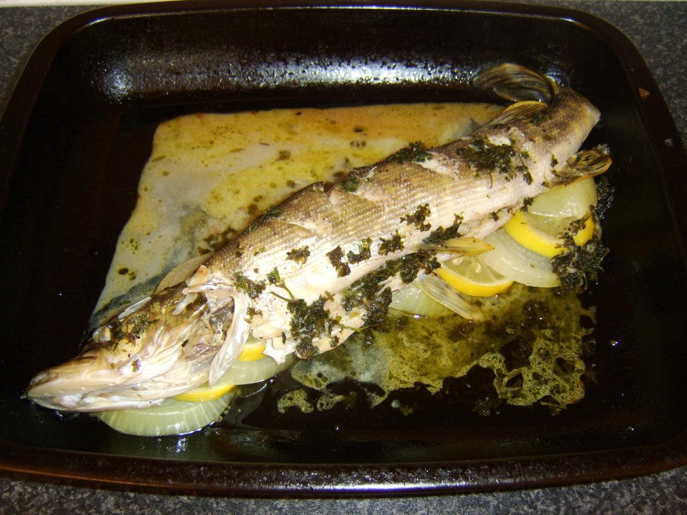
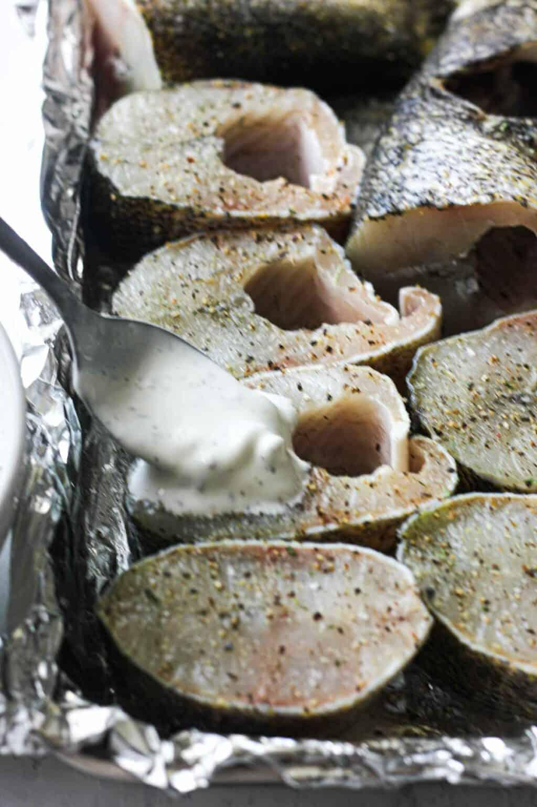

Northern pike gets written off more than any other fish in Quebec waters. Anglers throw them back, call them slimy, bony, not worth the effort. That reputation comes from people who've either never eaten one properly prepared, or who've chewed through a fillet full of Y-bones they didn't know how to remove. Fix those two things and you've got a fish that holds its own against walleye, trout, anything.
The flesh is white and mild, slightly sweeter than walleye with a bit more firmness. Baked whole, it stays moist in a way that fillets don't. The skin and bones do the work, keeping everything together while the heat moves through evenly. A 2 to 3kg pike is the sweet spot — big enough to feed four but still fits in a standard camp oven or a roasting pan.
Dill and pike are a natural pairing, common in Scandinavian and Eastern European cooking, where pike is actually considered a prize catch. The capers add a sharp, briny hit that cuts through any richness. Lemon keeps it bright. The whole thing takes about 40 minutes once your oven is hot.
The One Step You Can't Skip
Score the flesh before anything else. Deep diagonal cuts down to the bone, every 5 centimetres on both sides. Don't be timid with the knife. Scoring lets the seasoning get in, speeds up cooking, and makes serving clean. A fish that hasn't been scored properly is harder to season, slower to cook evenly, and falls apart messily at the table. One minute with a sharp knife saves all of that.
Building the Flavour
Rub olive oil all over the fish — outside, inside the cavity, and into every score line. Season generously with salt, pepper, and smoked paprika, working it into the cuts. Half the dill and lemon rounds go inside the belly cavity where they steam the fish from within as it bakes. The rest of the dill and garlic get tucked into the score marks on the outside. Capers scattered over the top, butter dotted along the length, a squeeze of lemon over everything.
The white wine in the roasting pan creates steam and becomes the pan sauce. If you don't have wine, a splash of water with a squeeze of lemon does the same job.

Baking and Serving
200°C, uncovered, 30 to 35 minutes depending on thickness. The flesh at the deepest score mark should be opaque and just pull away from the bone when pressed with a fork. Let it rest 5 minutes before serving — the juices settle and the fish holds together better when you go to portion it.
Bring the whole pan to the table. Run a spoon along the spine and the flesh lifts off cleanly in sections. The Y-bones in pike sit in a predictable row roughly a third of the way up from the belly — once you know where they are, they're easy to navigate around. Show someone once and they'll never call pike a trash fish again.
"Dill and pike are a natural pairing, common in Scandinavian and Eastern European cooking, where pike is actually considered a prize catch. Fix the bones, fix the preparation — and you've got a fish that rivals walleye at the table."
The Full Recipe
Ingredients — The Fish
- 1 whole northern pike, 2 to 3kg, cleaned and scaled
- 3 tbsp olive oil
- 1½ tsp coarse salt
- 1 tsp black pepper
- 1 tsp smoked paprika
- 4 garlic cloves, thinly sliced
- 1 lemon, half sliced into rounds, half kept for juice
- 1 large bunch fresh dill
- 3 tbsp capers, drained
- 2 tbsp unsalted butter, cut into small pieces
Ingredients — The Pan
- ½ cup (120ml) dry white wine (or water with a squeeze of lemon)
- 1 tbsp olive oil
To Serve
- Extra dill fronds
- Flaky sea salt
- Crusty bread or boiled new potatoes
Method
- Prep the fish. Rinse the pike inside and out under cold water and pat completely dry. Score both sides with deep diagonal cuts every 5cm, cutting down to the bone. Rub olive oil all over — outside, inside the cavity, and into every cut. Season generously with salt, pepper, and smoked paprika, working it into the score lines.
- Stuff the cavity. Push half the dill into the belly cavity along with the lemon rounds and half the garlic slices.
- Set up the pan. Pour the olive oil and white wine into a roasting pan or large baking dish. Lay the pike in. Tuck the remaining garlic and dill into the score marks. Scatter capers over the top. Dot the butter pieces along the length of the fish. Squeeze the remaining lemon half over everything.
- Bake. Oven at 200°C (400°F). Roast uncovered for 30 to 35 minutes. The flesh at the deepest score mark should be opaque and just pull away from the bone when pressed with a fork.
- Rest and serve. Rest 5 minutes, then spoon pan juices over the top. Add fresh dill fronds and a pinch of flaky salt. Bring the whole pan to the table. Serve with crusty bread to mop up the juices, or boiled new potatoes alongside.
A Few Notes
On Y-bones. They sit in a predictable row about a third of the way up from the belly. Once you know where they are, they're easy to avoid. Scoring deeply is the other half of the equation — it makes the fish easier to season, faster to cook, and cleaner to serve.
On size. A 2 to 3kg pike is ideal. Anything smaller cooks too fast and dries out; anything larger won't fit most pans and needs the cooking time adjusted.
On substitutions. This method works with any large whole fish. Walleye, lake trout, or bass can all be baked the same way. Adjust time downward for smaller fish.

20+ years fishing Quebec's freshwater systems. Kayak angler, catch-and-release advocate, and founder of Sub Urban Anglers.
Read More About Me